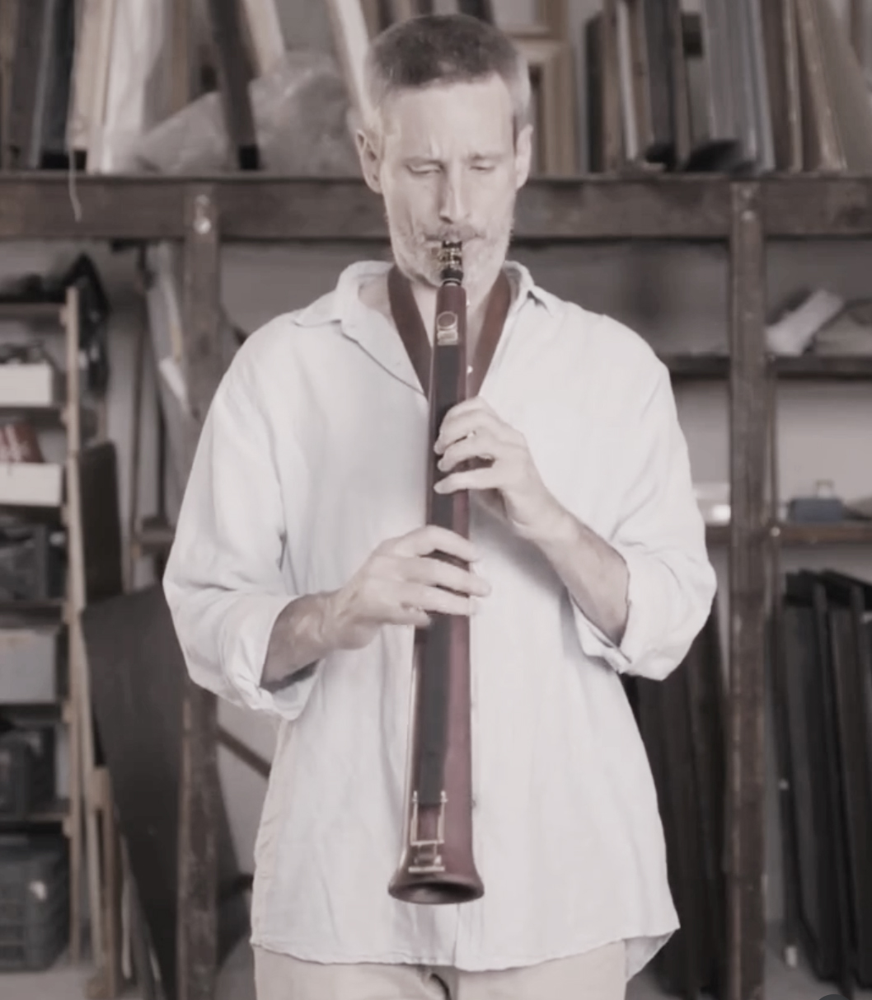
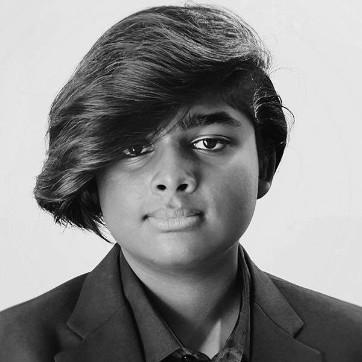
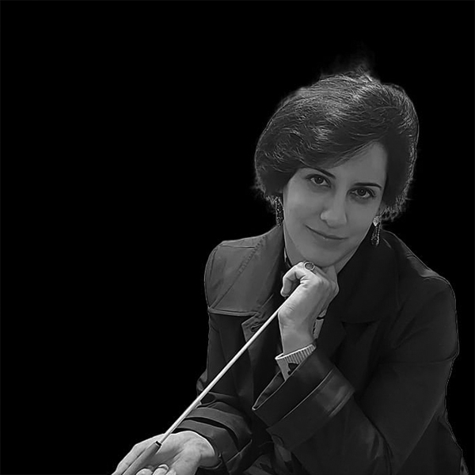
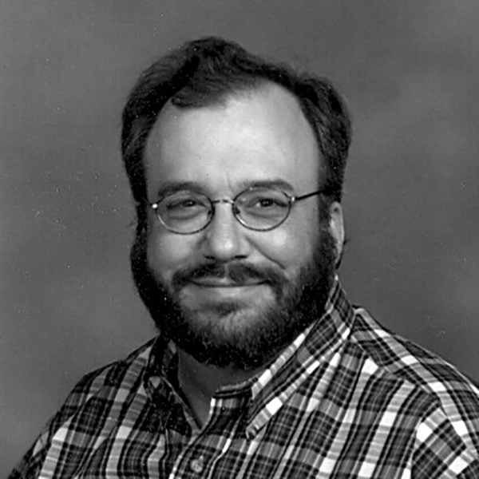
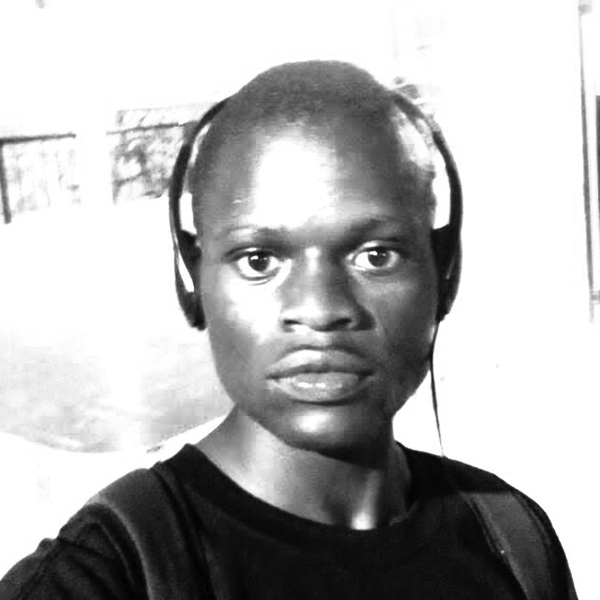
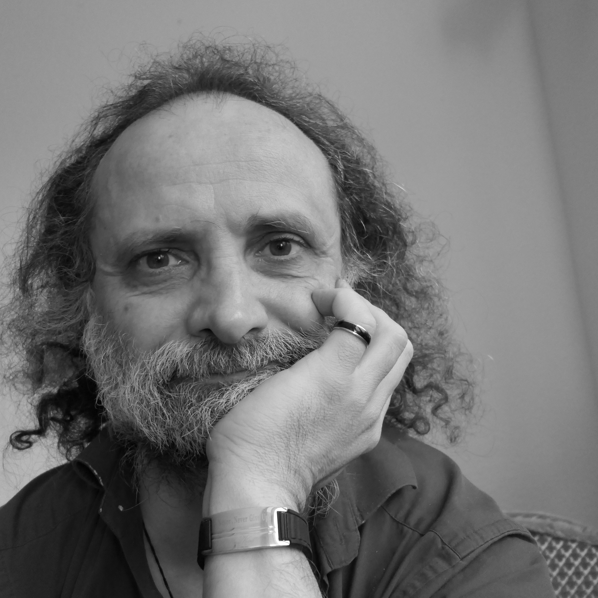
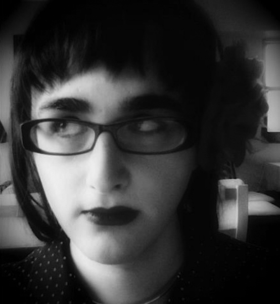
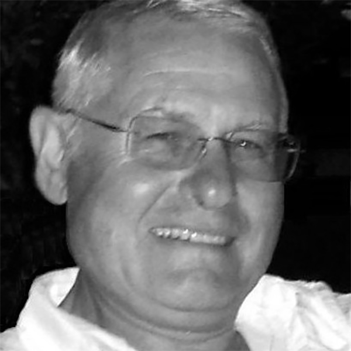
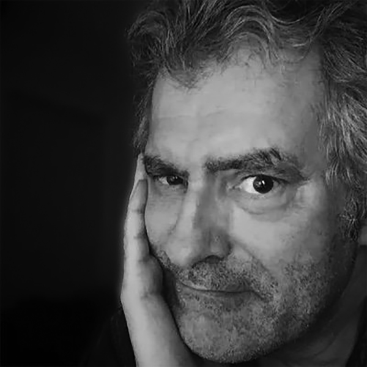

Daniel Vaczi

Fifteen Minutes of Fame featuring the Glissotar with Daniel Vaczi
Daniel Vaczi is one of the most exciting, multi-talented and versatile musicians of the Hungarian music scene. An inventor of instrument-families (Glissonic) and logic games (Urobo), composer, saxophonist and multi-instrumentalist, he explores and pushes the boundaries of classical, contemporary and jazz. He composes music for different formations, player piano/organ etc. As a musical theorist he invented a new musical system called 'reticular', meaning grid-like in which the pitch of the note is connected to its position in time; a kind of spacetime in music. With his musical groups they discover and search for the unity of strict compositions and free improvisations, using the toolkit of contemporary classical music and modern jazz.
Glissonic is a completely new wind instrument family. The main novelty is that instead of tone holes it uses a longitudinal gap or slot on the tube of the instrument. The two sides of the slot are covered with magnetic foil which attract a magnetized ribbon on top. The ribbon is fixed on the upper end, stretched and lifted up from the lower end as a string on a violin. You can push down the ribbon anywhere, it will seal up perfectly above it, so you can produce any note in the pitch continuum. It can be played with eight fingers of the two hands or by sliding one finger up and down. The glissotar is a glissonic tarogato (similar to a wooden soprano saxophone). The glissonic system can be used on all kinds of wind instruments: flute, whistle, clarinet, saxophone, oboe and even the cornett.
Concert Dates
To be announced.
Fifteen Minutes of Fame

GLISS
Aarohan Jai Anand
Written for Daniel Vaczi's 'Glissotar' to display some of its virtuosic playing principles and extended techniques.
Aarohan Jai Anand (b. 2009, 15 yrs) is a young composer, pianist, and hornist hailing from Chicagoland, IL (USA), and is an aspiring music educator. As of the 2025-26 school year, Aarohan is a high school sophomore. He is a horn player for his school's Wind Ensemble, as well as a mellophonist in the school's competitive marching band. Every year since 2023, he has attended Blue Lake Fine Arts Camp in Michigan. He was selected to be part of the ILMEA 2023-24 District 9 Junior Band, and as second horn in the prestigious 2025-26 District 9 ILMEA Senior Band.

Pastoral
Bracha Bdil
Bracha Bdil (1988), is an Israeli-British composer, conductor, and pianist, winner of the Prime Minister's Award for Composition (Israel, 2022) and the ACUM Award (2019). Her repertoire spans different mediums including orchestral music, chamber, vocal and electronic music.

Tarocatta
David Bohn
David Bohn received degrees in composition from the University of Wisconsin, University of Wisconsin-Milwaukee, and the University of Illinois. He currently resides in West Allis, Wisconsin, and is the music coordinator at Peace Methodist Church in Brookfield. He is the President of the Wisconsin Alliance for Composers.
LIKE A HORSE OF THE MOUNTAINS
Erik Branch
"...here he [Lugalbanda] on his own set a trap in the ground, and from that spot he sped away like a horse of the mountains." (From the Sumerian myth, Lugalbanda in the Mountain Cave.) The rhythm of the music suggests a horse's cantering, pausing, and rushing away.
Erik Branch is a native of New York City, and received a BA and MA in Music (Composition) from Hunter College. He lives near Orlando, Florida, where he is active as a pianist, musical director, composer/arranger, operatic tenor, and actor on stage and screen.
Glissotude #3
Michael Coleman
"Glissotude #3" is dedicated to Daniel Vaczi as part of his Fifteen-Minutes-of-Fame project. This etude has a somewhat mechanical, forward-drive effect and features some of the glissando possibilities of the glissotar (glissonic tarogato).
Michael Coleman has participated as composer/pianist in numerous new music programs and festivals in the U.S. and Russia and has also had works performed in North & Central America, Europe, and Eurasia. He currently teaches at Pensacola State College and the University of West Florida.
Saṃsara (Birth)
Douglas DaSilva
I composed five one-minute pieces based on the concept of Saṃsāra (cycle of death & rebirth) for this intriguing call: "Birth"; "Life"; "Blues"; "Death"; & "Rebirth". Each work individually as well as a cycle. From these I selected the first that I composed: the cuica-inspired "Birth" as my submission.
Douglas DaSilva spends his days teaching music & martial arts to very young children in NYC. He feeds off the positive life-energy of children. Every day he questions whether the relationship is symbiotic or if the souls of the young will wither away prematurely as he recharges parasitically.

Conversation Between Birds Early in the Morning
Petri Kuljuntausta
The work is a short study for a new instrument, the Glissotar, inspired by birdsong. I am exploring the musical dimensions of birdsong in my multi-year artistic research project and developing a method for playing on an equal footing with birds and nature.
Petri Kuljuntausta works as a Composer, Sound Artist, Musician and Writer-Researcher. He works with environmental sounds and live-electronics, and creates sound installations for galleries and museums. Kuljuntausta is Adjunct Professor (Docent) of Sound Art and Electronic Music.

Bayo
Erick Odiweric
Erick Odiweric (b 1996) is a Kenyan composer, currently based in Nairobi. His music employs beauty, freedom, justice and simplicity. He learnt music with his teacher Aol Onyango at the Premier Academy of Music and also directed the Tumsda Choir-Mombasa.
Sharpened C for Daniel Vaczi
Etienne Rolin
This one minute work for Glissotar is centered around C sharp that is presented through the prism of a rich variety of articulation and timbral modification. Via glissandi, slap tongue, finger percussion, snapping, fluttertongue voice and multiphonics, "Sharpened C" reveals a constellation of complexity.
Etienne Rolin is a French-American composer, soundpainter, performer and woodwind specialist working in Bordeaux. His catalogue consists of over 1000 works with an important compilation of recordings. He performs on bansuri flute, basset horn, glissotar and the Sampo box for augmented sounds.

Stenoglissium
Juan Maria Solare
Aesthetically jazzy but not entirely tonal, this piece is based on a diatonic 12-note series, presenting a familiar yet unconventional harmonic world. Using consonant twelve-tone technique, Stenoglissium evokes Latin American magical realism: the ordinary suddenly transforms into the extraordinary, blending the everyday with the impossible.
Juan Maria Solare (1966, Argentina), works in Germany as composer, pianist, and teaching at the University of Bremen. His music has been performed across five continents, earned 11 composition prizes and received 30 million streams on Spotify. Over 33 CDs of different performers feature music by him.
Nitrogen
Jason A. Taurins
Nitrogen is the seventh element on the periodic table. Forming the vast majority of the Earth's atmosphere, nitrogen is a key component in fertilizers which keep 8 billion people fed. This is a continuation of my series of miniatures on each of the chemical elements.
Jason Taurins (born 1991) is an American composer based in Phoenix, AZ. He studied with Lisa Coons and Richard Adams at Western Michigan University. His music is regularly performed around the world.

What happens when you zoom in
Alex Temple
"What happens when you zoom in" was inspired by scanning electron microscope images, which reveal that seemingly smooth surfaces are actually full of roughness and discontinuity. It starts with a bebop-esque lick, then repeatedly slows it down, adding more pitch slides, microtonal inflections and special effects each time.
Alex Temple writes music that distorts and combines iconic sounds to create new meanings, often in service of surreal, cryptic or fantastical narratives. Her collaborators include Mellissa Hughes, Julia Holter, wild Up, Spektral Quartet and the Detroit Symphony Orchestra. She is currently an Assistant Professor at Arizona State University.

Prelude to an iPhone's Afternoon
Jean-Pierre Vial
A short fantasia that exploits the glissando capability of the glissonic tarogato (glissotar) for presenting a minute variation on the theme of Debussy's "Prelude a l'apres-midi d'un Faune" (Prelude to "The Afternoon of a Faun"). The piece is dedicated to glissotarist Daniel Vaczi.
Jean-Pierre Vial, born in 1946 near Paris, France, is a former software designer. At an early age, he learned the piano, the organ, and composed several pieces for both instruments. Over the last decade, various soloists, small ensembles, or orchestras have performed his music worldwide.
Scivolando
Anna Vriend
This short piece for glissotar is dedicated to Daniel Vaczi. It plays around with glissandi, one of the special techniques usable on the instrument. It also exploits the techniques adopted by wind players, such as found in dynamics, articulation and vibrato.
Anna Vriend (1961) has written music for a broad range of instruments including recorders, flute, bass clarinet, reed quintet, bowed and plucked string instruments, reed organ, organ, piano and choir. Several of her works have been performed on 15 Minutes of Fame.

Babble and Bend
Mark Zaki
Babble and Bend explores the Glissotar's expressive range through playful slides, sharp pivots, and flowing lines. Inspired by spontaneous speech and serpentine motion, the piece highlights the instrument's capacity to twist, stretch, and shift — always in motion, always changing, like a voice that can't sit still.
Building on his many diverse interests, Mark Zaki's work ranges from historically-informed and traditional chamber music to electroacoustic music, intermedia composition, and music for film. Dividing his time between NYC and Princeton NJ, he is Professor of Music at Rutgers University-Camden, where he has taught since 2008.